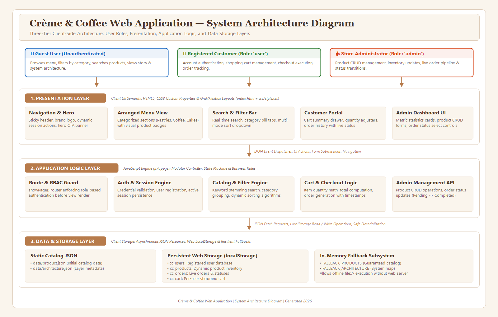

Target Industry: Micro and Small Local Bakeries & Boutique Coffee Shops (Crème & Coffee).
Local artisanal bakeries face recurring operational bottlenecks that compromise customer experience and erode profitability:
| Component | Inputs | Outputs / Results |
|---|---|---|
| Authentication | Name, Email, Password, Confirmation | Session token, personalized header, auth errors |
| Menu & Catalog | Search queries, Category tabs, Sort dropdown | Arranged product cards, category badges, counts |
| Shopping Cart | Product ID, Quantity delta (+/-), Removal | Itemized cart rows, live item count, total price (₱) |
| Order System | Checkout confirmation dialog | Order receipt ID, status tag, customer order list |
| Admin Portal | Name, Category, Price, Image URL, Order Status | Metric cards, updated live inventory, status updates |
| Entity | Fields & Data Types | Storage Mechanism |
|---|---|---|
| User | id (Num), name (Str), email (Str), password (Str), role (Str) |
localStorage['cc_users'] |
| Product | id (Num), name (Str), category (Str), description (Str), price (Num), image (Str) |
data/product.json + localStorage['cc_products'] |
| Order | id (Num), customer (Str), email (Str), items (Array), total (Num), status (Str), date (Str) |
localStorage['cc_orders'] |
Design System & UI/UX: The visual theme embodies an artisanal European bakery using warm, inviting tones: Cream background (#FAF5ED), Caramel accents (#B77B4B), and Espresso typography (#493326). Semantic HTML5 and mobile-first CSS Grid and Flexbox ensure responsive adaptability across desktop, tablet, and smartphone viewports.
Role of AI Tools in Development:
app.js into 13 structured sections with strict XSS sanitization (escapeHTML).fetch() with in-memory fallback datasets.System.Drawing.The web application is structured at the repository root and configured for static web hosting without build steps or complex dependencies:
admin@creme.com | Password: admin123The system is organized into a three-tier architecture: Presentation Layer (UI/UX), Application Logic Layer (Controller & Rules), and Data Storage Layer (JSON & Web Storage), driven by distinct user roles.

The following paragraph explains the end-to-end operation of the web application and details the relationship of the components illustrated in the system architecture diagram:
js/app.js. The Route and RBAC Guard inspects the current user’s session state to ensure that restricted views, such as customer order histories and administrative management tools, are only rendered for authorized roles. For catalog browsing, the Filter and Search Engine processes input from the presentation controls, categorizing items into distinct pastry, coffee, and cake collections while applying multi-criteria sorting algorithms. When a customer places an order, the Cart and Order Processor calculates itemized totals and serializes order records into browser localStorage, ensuring data persistence across sessions without requiring an external backend server. Concurrently, store administrators utilize the Admin API within the logic tier to mutate the inventory and transition order fulfillment statuses between Pending, Preparing, Completed, and Cancelled. On initial load, the system asynchronously retrieves catalog data from data/product.json, falling back gracefully to embedded in-memory data structures whenever network access or local server hosting is unavailable. This bidirectional relationship between the visual interface, centralized logic engine, and localized persistence layer delivers a seamless, responsive, and secure e-commerce experience tailored for small bakery operations.